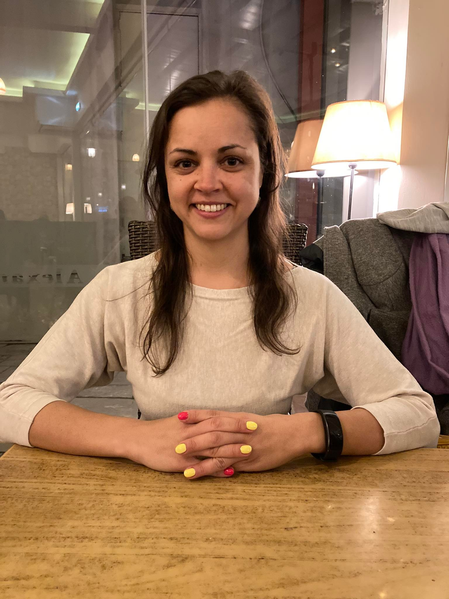

ILZE RIEZNIECE
Experienced content manager with a wide knowledge of working in the banking industry. Skilled in
communication, management, time and content management, copywriting and coaching&mentoring.
Responsible, hard working, attentive to details and customer oriented person who strives to new challenges. Always ready to develop new skills. Achieve results in both ways - alone or by working in a team. Prefer agile working type, can work under pressure. Easy to adapt.
WORK EXPERIENCE
Content and project manager for virtual asistant
Swedbank Latvia (05/2019 - current)
Train and develop chatbot, analyze and provide data, QA, cooperation with product owners, developers, UX and stakeholders from Baltic/Sweden.
Customer consultant
Swedbank Latvia (07/2017 - 04/2019)
Support customers remotely in daily operations.
Owner and manager of the company
IRKS Ltd ( 02/2009 - 09/2016)
Organize company's work, ensure HR functions, analyze data and finances, find business partners in Europe/Asia.
Coach - mentor to young franchisees
Narvesen Baltija Ltd (01/2013 - 11/2014)
Teach and train new franchisees and provide them support.
COURSES
- 2022 - Automated software testing (University of Latvia)
- 2021 - Baltic Digital Skills Development program "Business and Data Analysis" (LU Innovation center LUMIC, powered by Microsoft)
- 2020 - Discover Tech (Riga TechGirls, Women go Tech, Google.org)
- 2019 - Elements of AI (University of Helsink and Reaktor)
- 2012 - Trainer as mentor
MANAGEMENT AND LEADERSHIP SKILLS
Ability to organize a team, coordinate and lead it
- Ability to perform multi-tasks and work under pressure
- Delegate tasks and oversee their progress
- Problem solving
- Responsibility, accuracy and punctuality
- Ability to make decisions
- Good time management and tasks prioritization
- Mentoring skills
COMMUNICATION AND INTERPERSONAL SKILLS
Communication skills in oral and written ways
- Provide equally well work both in teams and individually
- Ability to listen to customer's needs and solve their issues
- Ability to easily explain complex things
- Adaptability and flexibility
DIGITAL AND TECHNICAL SKILLS
Advanced user of digital technologies
- Experience in working with Nuance (Microsoft) platforms
- Expert in using virtual assistants and chatbots towards customers
- Deep knowledge about machine learning and AI
- Experience in copywriting and building dialogue strategy
- Basic knowledge in Json, Python, HTML, JS, Atlassian (Jira, Confluence), Visio
- Experience in testing chatbot performance in app and web environments
- Knowledge and interest in technical area